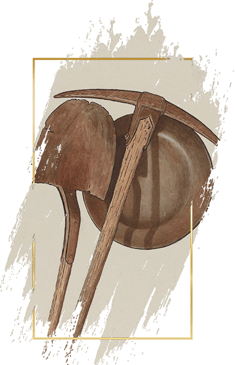

CHANGE YOUR
SLEEPING GAME

The computer screen puts a strain on your eyes—especially towards the end of the day. It also emits blue light, making you more alert and affecting your circadian timing. That's all to say your screen could be behind your sleeping problems.
This is where f.lux comes in.
f.lux is a software that gives your screen a calming yellow tint. The lighting change kicks in as soon as the sun sets, and while the yellow screen might seem unusual at first, it's much more pleasant to look at. And the best part? f.lux works completely automatically.
GET F.LUXMusic is a quick and easy way to relax before going to bed. Meditative ambience, sounds of rain or old tunes can simultaneously make you sleepy and drown out invasive thoughts in your head.
Here are a few mixes of our liking, but feel free to explore and find your sound. And if you have a pair of bluetooth earbuds, you can leave the music on to help you sleep.
TIP: if you want a mix to repeat, right click on the YouTube video and select Loop.
Music is fine and dandy, but sometimes, the best thing to help you sleep is good old-fashioned silence. In this case, the earplugs are a godsend. Put these in, and your nights will instantly get quiter.
The best thing about earplugs is that they don't shut out all the sounds—they simply make most noises muffled enough that they don't distract you from your sleep. A loud noise—like your phone's alarm—will get through just fine, so you won't be late for work because of your earplugs.
FIND EARPLUGSOkay, reading doesn't sound groundbreaking, but the devil's in the details. It's the type of book you read that will be the difference-maker for your sleep schedule.
You don't want your book to be so gripping that you're reading it the same way you're watching your favorite TV show, but you don't want it to be dull either.
You need to strike a balance. The book has to be interesting enough to hold your attention and make you want to return to it, but not captivating enough to make you read all night. Such works can be difficult to find, so we put together a small list of (mildly) interesting books for you.
VIEW BOOKSAgain, not exactly revolutionary advice, but going to sleep can be difficult if you're... well, not tired. Mental fatigue doesn't always cut it, so physical exhastion can be a viable alternative. Of course, you don't have to sign up for gym membership to get some shut-eye, and even body weight exercises can give you a solid work out.
You could also go with the exercises that relieve tension and make your body more relaxed. Stetches are particularly good here, and if you do them long enough, you can fix your posture or eliminate back pain.
Knowing what you need to do is only part of the process. You might pick up a book and read it for a few days, but other things will inevitably come up and make you lose track of your reading. The same applies to daily stretches or meditative music sessions.
It's all too easy to get lost in the weeds.
This is where a habit tracker comes in. It's a simple app you can install on your phone to set goals, track progress and turn productive things into a part of your daily routine.
Word of advice: start small. Don't set the goal of reading a 100 pages a day—instead, pick up a book for 10 minutes before going to bed. Anyone can do 10 minutes of reading, right? But these minutes add up, and before you know it, you won't spend an evening without a good book in your hand.
GET HABIT TRACKER